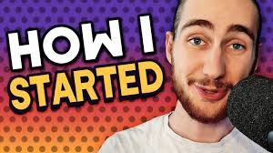

I am not a fully professional game developer yet but as I am learning I know how I started and What I started learning and still doing it. So, for anyone interested in game development, Unity stands out as one of the most accessible and powerful tools to get started. Whether you’re a complete beginner or have some programming background, Unity offers a variety of tools and resources that make game development approachable and exciting. Today, I'll share some insights on Unity and game development to help you get started and stay motivated in creating your own games.

Why Game Development?
There are many reason why you will choose this:
"If you don't love what you do, you won't do it with much conviction or passion."
I personally love this a lot.We all learn basic of programming without knowing where we will use it untill we start making something with programming knwoledge. Same goes with this. You see an object is changing its position, rotating per update frame and you wrote the code for it.When you will see these on your screen you will understand what is the fun of game development and programming.
Also, we hardly get a person who didn't play games on their PC or Mobile phone. NO doubt we all did it in our childhood or still we are doing it. Temple Run,Candy Crush,Angry Bird,Dr. driving etc were trending in mobile back in 2014.
Day by day these all have upgraded itself.Some lost their market.In 2016 Game named CLASH OF CLANS was very famous. In 2018 when I was in college Game name PUBG and FREE FIRE were trending. I hardly see a boy who did not play it. Or haven't seen it.
Or in PC games like "CALL OF DUTY", "BATTLEFIELD","TOMB RIDER", "RDR" etc are very famous.Almost all of us know the game "GTA","Grand Theft Auto: San Andreas" etc. game.
All those games I have talked is somehow made by someone.And here is no doubt on it.And while playing this probably some of us were asking ourselves how these all were made?And to answer this question here comes the game development.

Game Engine in Game Dev:
There are a lot of Game Engine in the world right now.These all are famous for specific work and genre."Unity", "Unreal", "CryEngine", "Amazon Lumberyard", "Dunia" etc. We can make both 2D and 3D games in these. In recent time Godot is rising in 2D environment game.There are also "GameMaker:Studio", "Cocos2d" engine which are only dedicated to 2D game.
But in my blog I am going to write about Unity Game Enginge and how much I have got to know.

Why Choose Unity?
Unity has become one of the most popular game engines for several reasons:
Recently a Bangladeshi game named Zero-Hour have become very famous.It was made with Unity.


image: Zero Hour Game
1.Cross-Platform Support
Unity allows you to build games for multiple platforms such as Windows, Mac, iOS, Android, and consoles, with minimal changes to your code. This versatility is perfect for indie developers or those working solo.
2.Ease of Use
Unity's interface and workflows are intuitive. The platform offers both visual scripting and C# programming, giving flexibility for beginners and more advanced developers.
3.Large Community & Resources
There is no doubt that the Unity's asset store is huge. You can get free and paid both in there. Which you can use in your game. And it saves money and time at the same time. It is friendly for indie game developer. From my personla experience as a beginner I once working in a FPS project and I needed a military as enemy Ai. As I didn't know how to make these things.So, I directly went to the asset store and searched for one. I got a low polly military asset in there. Which saved my project and saved times and I was able to finish my project.
4.Rich Asset Store
Unity’s community is vast, which means you’ll find forums, tutorials, and documentation to help solve almost any issue.
For instance, the Brackeys is an excellent resource for learning Unity,
offering tutorials on scripting and development fundamentals.

But in case if you want better path and structure way of learning Unity itself is providing a course for you to learn. It is well organized. you can go to Junior Programmer
Starting with Unity
1.Learning the Interface
Begin by familiarizing yourself with Unity’s interface. Key panels to understand include:
i)Scene View: Where you arrange your game’s objects.
ii)Game View: Where you see how the game will look when it’s played.
iii)Inspector Panel: Where you modify properties of selected objects.
iv)Project Panel: Where you organize your game assets.
Getting comfortable with these areas will help you navigate Unity faster and make you feel at home in the environment.
2.Understanding the Basics of Game Objects
In Unity, everything you add to your scene (such as a player character, enemies, or items) is a GameObject. Each GameObject has different components like Transforms, Mesh Renderers, Colliders, and custom scripts. Understanding GameObjects and components is essential to building anything in Unity.
3.Programming with C#
C# is the main programming language used in Unity, and learning its basics is crucial for creating game logic.
With some C# knowledge, you can script everything from player movements to enemy behaviors and game mechanics.
Start small! Begin by scripting basic player movements:
using UnityEngine;This script lets your player move in any direction based on keyboard input. Simple projects like this build a foundation for more complex mechanics down the line.
public class PlayerMovement : MonoBehaviour
{
public float speed = 5f;
void Update()
{
float horizontal = Input.GetAxis("Horizontal");
float vertical = Input.GetAxis("Vertical");
Vector3 movement = new Vector3(horizontal, 0, vertical) * speed * Time.deltaTime;
transform.Translate(movement, Space.World);
}
}
4.Using Unity's Physics and Lighting
Unity offers physics and lighting tools to bring realism into your games. Components like Rigidbody (for physics-based movements) and Lights (for realistic illumination) make games feel immersive.
Building A Game
When I make a game I try to make a plan before starting the work.Like documentation and designing of that project.
As I am an indie game developer I don't need to worry about what the other people are thinking or doing.Or I don't need any dependency on anyone. So I do all these on my own.
I first take pen and paper and start writing what type of game I am going to make. What assets I need to create.Or how many objects I need in the game. Below I am giving all the steps that I try to follow while making a game.
1.Plan the Game: Talked about how I do earlier.
2.Create the Scene: Based on that plan I try to create a demo type at first.
3.Add Player and Enemies: The Assets part comes here.
4.Design Game Mechanics: After finishing all three steps 4th steps appear here I try to make the whole game.
5.Polish and Test: The last part to check what type of bugs available. How to remove or keep it as feature or not.
An Example of How I plan:

Project name: "The Apartheid"
The Path Ahead
Game development is a journey of continuous learning and experimentation. Unity offers endless possibilities for those willing to put in the time and dedication. Don’t get discouraged by bugs or setbacks—every developer faces them. Each project you complete brings you closer to your goals and builds your confidence.
If you’re looking to become a game developer, Unity is one of the best platforms to make that dream a reality. So, download Unity , pick up some tutorials, and start creating!